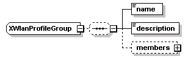
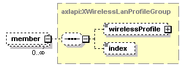

| diagram |  | ||
| namespace | http://www.cisco.com/AXL/API/10.5 | ||
| children | name description members | ||
| used by |
|
||
| source | <xsd:complexType name="XWlanProfileGroup"> <xsd:sequence minOccurs="0"> <xsd:element name="name" type="xsd:string" nillable="false" minOccurs="1" maxOccurs="1"/> <xsd:element name="description" type="xsd:string" nillable="false" minOccurs="1" maxOccurs="1"/> <xsd:element name="members" minOccurs="0" maxOccurs="1"> <xsd:complexType> <xsd:complexContent> <xsd:extension base="axlapi:XCommonMembersExtension"> <xsd:sequence minOccurs="0"> <xsd:element name="member" type="axlapi:XWirelessLanProfileGroup" minOccurs="0" maxOccurs="unbounded"/> </xsd:sequence> </xsd:extension> </xsd:complexContent> </xsd:complexType> </xsd:element> </xsd:sequence> </xsd:complexType> |
| diagram | |||||
| type | xsd:string | ||||
| properties |
|
||||
| source | <xsd:element name="name" type="xsd:string" nillable="false" minOccurs="1" maxOccurs="1"/> |
| diagram | |||||
| type | xsd:string | ||||
| properties |
|
||||
| source | <xsd:element name="description" type="xsd:string" nillable="false" minOccurs="1" maxOccurs="1"/> |
| diagram | |||||||
| type | extension of axlapi:XCommonMembersExtension | ||||||
| properties |
|
||||||
| children | member | ||||||
| source | <xsd:element name="members" minOccurs="0" maxOccurs="1"> <xsd:complexType> <xsd:complexContent> <xsd:extension base="axlapi:XCommonMembersExtension"> <xsd:sequence minOccurs="0"> <xsd:element name="member" type="axlapi:XWirelessLanProfileGroup" minOccurs="0" maxOccurs="unbounded"/> </xsd:sequence> </xsd:extension> </xsd:complexContent> </xsd:complexType> </xsd:element> |
| diagram |  | ||||||
| type | axlapi:XWirelessLanProfileGroup | ||||||
| properties |
|
||||||
| children | wirelessProfile index | ||||||
| source | <xsd:element name="member" type="axlapi:XWirelessLanProfileGroup" minOccurs="0" maxOccurs="unbounded"/> |